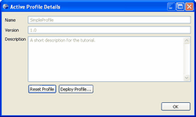

At any time, you can view the details of your active profile by selecting the Tigerstripe menu and clicking Active Profile Details. The Active Profile Details dialog box displays.

This dialog box includes the following information:
- The profile name.
- The profile version number.
- The profile description.
From the Active Profile Details dialog box, you can reset your project profile to the factory default settings, or deploy a different project profile.
Note: Before you reset or deploy a new profile you must first save your project.
To reset your project profile:
- Click Reset Profile. The Reset Active profile to Factory Defaults? dialog box displays.
- Click OK to continue or click Cancel to cancel the reset action. The Progress Information dialog box displays.
- Click OK when the Active Profile Rollback dialog box displays.
You have successfully reset your project profile to the factory default settings.
To deploy a different project profile:
- Click Deploy Profile. The Select Profile dialog box opens.
- Navigate to the location of your profile and click Open. The Save as Active Profile dialog box displays.
- Click OK to continue or click Cancel to cancel the deployment action. The Progress Information dialog box displays.
- Click OK when the Active Profile Rollback dialog box displays.
You have successfully deployed a new project profile.
Profile Perspectives
The General Tab
The Annotation Tab
The Primitive-Type Tab
The Artifacts Tab
Deploying your Profile
Rolling Back
Loading Factory Defaults